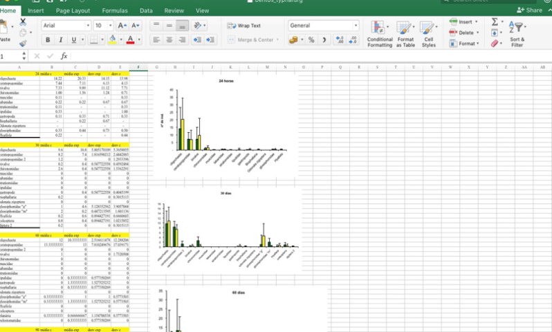

Todo e qualquer projeto de pesquisa terá como uma parte importante a coleta de dados. Os dados obtidos em amostragens (organismos bentos, peixes recifas,…) são de alguma maneira registrados em campo e posteriormente digitalizados em forma de planilhas (excel, e.g.). Após a digitação dos dados, o passo seguinte é explorarmos de alguma maneira estas informações. As informações podem ser visualizadas em gráficos em tabelas…
No entanto, a leitura dos dados pelo olhar humano e a leitura realizada por uma “máquina” são realizadas de maneiras completamente distintas. A leitura humanda de planilhas é visual, tendemos a destacar informações com cores e tabulações. Já a leitura dos dados realizadas por algoritmos opera de uma maneira completamente diferente.
Para que possamos processar os dados coletados, primeiramente estes devem lidos por algoritmos de maneira correta. Sendo realizada a leitura precisamos ainda estruturá-los de forma que possam ser lidos, formatados e recodificados para a leitura humana. Exitem inúmeras maneiras organizar um banco de dados e algumas estruturas de dados tornam quase que impossível a leitura e manipulação. Nesse sentido, o objetivo desta sessão e apresentar um guia de boas práticas de formatação de planilhas de dados da maneira mais simples e lógica possível, possibilitando a fácil leitura e manipulação.
Tenha em mente que o processo do uso da informação em pesquisas apresenta etapas bem distintas.
Desta maneira, quando estiver estruturando seu banco de dados, não pule etapas ou mesmo misture estes passos em uma planilhas do excel. Isto torna a informação inviável de ser acessada por outros meios de leitura (R software, e.g.). Muitas vezes nos sentimos tentados a fazer uma gráfica ou uma formatação visual no excel que não contribuirão para a manipulação e visualização das informações.

Exemplo de uma planilha “mista”
Portanto, tente fazer uma etapa de cada vez e nunca misture dados coletados com tentativas de visualização, análises estatísticas e formatações visuais.
Existem diversas maneiras de organizar dados e alguns formatos são muito difíceis de intepretar e manipular. Abaixo são apresentadas algumas formas de organização de dados de um mesmo conjunto de informações.
table1## # A tibble: 6 x 4
## country year cases population
## <chr> <int> <int> <int>
## 1 Afghanistan 1999 745 19987071
## 2 Afghanistan 2000 2666 20595360
## 3 Brazil 1999 37737 172006362
## 4 Brazil 2000 80488 174504898
## 5 China 1999 212258 1272915272
## 6 China 2000 213766 1280428583table2## # A tibble: 12 x 4
## country year type count
## <chr> <int> <chr> <int>
## 1 Afghanistan 1999 cases 745
## 2 Afghanistan 1999 population 19987071
## 3 Afghanistan 2000 cases 2666
## 4 Afghanistan 2000 population 20595360
## 5 Brazil 1999 cases 37737
## 6 Brazil 1999 population 172006362
## 7 Brazil 2000 cases 80488
## 8 Brazil 2000 population 174504898
## 9 China 1999 cases 212258
## 10 China 1999 population 1272915272
## 11 China 2000 cases 213766
## 12 China 2000 population 1280428583table3## # A tibble: 6 x 3
## country year rate
## * <chr> <int> <chr>
## 1 Afghanistan 1999 745/19987071
## 2 Afghanistan 2000 2666/20595360
## 3 Brazil 1999 37737/172006362
## 4 Brazil 2000 80488/174504898
## 5 China 1999 212258/1272915272
## 6 China 2000 213766/1280428583# Dados apresentados em duas planilhas ou "tibbles"
table4a## # A tibble: 3 x 3
## country `1999` `2000`
## * <chr> <int> <int>
## 1 Afghanistan 745 2666
## 2 Brazil 37737 80488
## 3 China 212258 213766table4b## # A tibble: 3 x 3
## country `1999` `2000`
## * <chr> <int> <int>
## 1 Afghanistan 19987071 20595360
## 2 Brazil 172006362 174504898
## 3 China 1272915272 1280428583Analizando os conjuntos de dados acima, qqual vocês julga ser o mais fácil de ler e interpretar? Provavelmente vocês escolheu a a table1. Esta conformação de dados é maneira mais simples e a fácil de se manipular. Este formato também é conhecido pelo formato “longo”.
Este tipo de organização de dados é denominda por Wickham e Grolemund (2017) do “tidy data”. Segundo os autores, esta organização de dados é regida por três regras:
Cada variável deve ter sua própria coluna
Cada observação deve ter sua própria linhas
Cada valor único deve ter sua própria célula
As tres regras para um conjunto de dados “tidy” (Wickham e Grolemund, 2017)
Entende-se pela formatos onde cada linha é uma unidade amostral e as coluna as variáveis. Cada unidade amostral adicionada acrescenta uma linha para baixo. Cada variável adicionada acrescenta uma coluna. Este formato é o utilizado na grande maioria das análises estatísticas.
fig
fig
O emprego de uma lógica hierárquica na construção dos bancos de dados ajuda muito no momento da digitação dos dados e na compreessão da estruturea dos dados.
Nome de espécies
Nomes de locais
Coordendas
Wickham, H. & Grolemund, G. R for Data Science - import, tidy, transform, visualize, and model data. (O’Reilly Media, 2017).